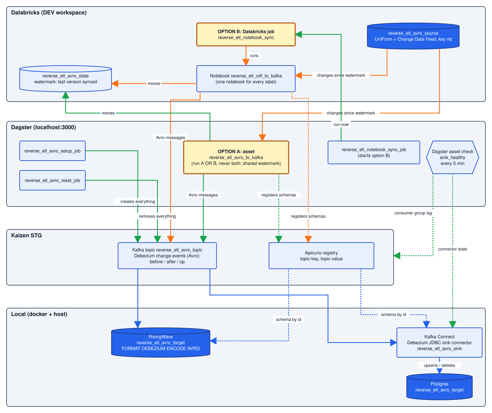

Run status
Syncs changes from the Databricks source table to Postgres and RisingWave through Kafka. Use the rail, click a step, or press the left and right arrow keys.
Run status
What the table behind step 1 needs, and how to define it. The setup job creates it for you from orchestration/defs/reverse_etl_avro/defs.yaml; this is the DDL it runs.
delta.enableChangeDataFeed on costs nothing and keeps the table compatible with the notebook comparison path, which does read table_changes().rid, an identity column Databricks fills in on insert. Every target is keyed on it. The business id is not used as the key: Unity Catalog primary keys are informational, so two rows can share an id, and deleting one removed the other downstream.source_columns in the sync's YAML (here id, value, updated_at).INSERT INTO t (id, value) VALUES (...). A column-less insert fails on a table with an identity column.last_schema and drops the vanished column from RisingWave and Postgres too — RisingWave fills <col>_ts companions in first, Postgres follows the broader rule and also re-drops anything a sink replay re-added. Renames propagate as renames now: the state records each column's delta.columnMapping.id (stable across a rename), so the sync can tell the two apart — RisingWave gets add + update-copy + drop (no RENAME COLUMN there, but the data survives), Postgres a native rename plus an automatic sink task restart, because the JDBC sink's in-memory schema cache would fail the next message otherwise. Every source table is created with column mapping, so Delta accepts DROP COLUMN and RENAME COLUMN everywhere; type changes are still refused by Delta and stay out of scope.Source table
CREATE TABLE IF NOT EXISTS de_dev.sr_poc_external.reverse_etl_avro_source ( rid BIGINT GENERATED ALWAYS AS IDENTITY, id BIGINT NOT NULL, value STRING, updated_at TIMESTAMP ) USING DELTA TBLPROPERTIES ( 'delta.enableChangeDataFeed' = 'true', 'delta.columnMapping.mode' = 'name', 'delta.enableDeletionVectors' = 'false', 'delta.enableIcebergCompatV2' = 'true', 'delta.universalFormat.enabledFormats' = 'iceberg' );
State table (the watermark, steps 2.1 and 2.5)
CREATE TABLE IF NOT EXISTS de_dev.sr_poc_external.reverse_etl_avro_state ( sync_name STRING, last_commit_version BIGINT ) USING DELTA TBLPROPERTIES ( 'delta.columnMapping.mode' = 'name', 'delta.enableDeletionVectors' = 'false', 'delta.enableIcebergCompatV2' = 'true', 'delta.universalFormat.enabledFormats' = 'iceberg' );
The same flow as a component map: where everything runs, both sync options (A and B share one watermark — run one or the other, never both), and the sink-health checks. The sync asset reads the change feed with OSS Delta — zero Databricks compute — and every run meters what it used, shown above as the Databricks cost line. Full picture: docs/poc/REVERSE_ETL_LIVE_DEMO.md.
